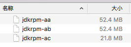

原文连接:https://www.cnblogs.com/bolingcavalry/p/11493150.html
以前曾经试过在VMware上安装linux，再在linux上编译openjdk8，但是每次都不顺利，例如linux环境，预装依赖软件，openjdk源码的选择等环境都会遇到问题，一旦失败再重新开始挺费时间的，现在用docker就省事多了，镜像和容器的创建和删除都比较简单干净，专心做好Dockerfile就行，下面我们一起来实践一下吧。
本次实战用到的所有文件，已经打包到github上，路径是：https://github.com/zq2599/centos7_build_openjdk8 ，欢迎您来使用(git clone git@github.com:zq2599/centos7_build_openjdk8.git)
本次编译实战的基本步骤如下：
编写的Dockerfile中要做的如下的事情：
- 安装依赖的软件；
- 把openjdk的源码复制到镜像中；
在编写Dockerfile之前要做三个重要的选择，如下：
- linux：我选择了centos7，之前试过ubuntu16.04，但是在configure的时候提示"freetype"没有安装，我按照提示去装了，再次configure的时候继续提示"freetype"没有安装......(此问题现在还没解决，如果您解决过相同问题，请您告诉一下解决方法，谢谢了！)
- openjdk源码，这次要编译的是openjdk8，源码的下载地址在这里
- Bootstrap JDK：即编译时要用到的JDK，下载了openjdk的源码后，解压开可以看到“README-builds.html”这个文件，里面有对Bootstrap JDK的描述：
看得出，需要安装jdk7来编译openjdk8的源码；
OK，关键问题都已确认，即将开始Dockerfile制作，不过制作之前还有个小问题需要先想好：本次我打算把制作镜像所需的Dockerfile和依赖文件都放到github上去，这样做的好处有两个：
- 读者们从git上clone下来之后直接执行Docker build就能在本地构建镜像;
- daocloud.io网站上支持通过执行github目录的方式在线构建镜像，后面我们会实践在daocloud.io上构建镜像并部署到腾讯云或者阿里云服务器上；
上传到github时，除了Dockerfile，还要上传的文件有两个：jdk1.7和openjdk8源码，都超过了100M，如下图：
这就麻烦了，github上传文件的时候，单个文件不能超过100M，否则push的时候会被服务器拒绝，解决这个问题有两个办法：
- 构建镜像的时候不要把这两个文件复制到镜像中了，改为在Dockerfile中通过执行wget命令将这两个文件分别下载到镜像中，openjdk的下载路径是http://www.java.net/download/openjdk/jdk8/promoted/b132/openjdk-8-src-b132-03_mar_2014.zip，而jdk1.7的下载路径就难办了，oracle上下载历史版本的时候，是要做登录操作的，这个在Dockerfile中难以实现，找到了一个下载地址https://mirror.its.sfu.ca/mirror/CentOS-Third-Party/NSG/common/x86_64/jdk-7u80-linux-x64.rpm，但是下载速度很慢，最少一个小时以上了，所以wget这种方法看似简单，但下载文件耗时实在太长；
- 第二种方法比较简单易用，就是在mac或者linux上先用split命令将文件分割成多个，再上传到github上，在Dockerfile中有对应的命令将分割后的文件恢复成分割前的原文件，具体的分割命令如下：
split -b 50m jdk-7u71-linux-x64.rpm jdkrpm-这个命令是将jdk-7u71-linux-x64.rpm分割成不超过50m的多个文件，分割后的文件以jdkrpm-作为文件名的前缀，如下图：

opensdk的源码用如下命令分割:
split -b 50m openjdk-8-src-b132-03_mar_2014.zip openjdksrc-Dockerfile中，从分割文件恢复以上两个原文件的命令为：
cat jdkrpm-* > jdk-7u71-linux-x64.rpm
cat openjdksrc-* > openjdk-8-src-b132-03_mar_2014.zip以上就是两种处理大文件的方法，本文用的是第二种，即先分割上传到git，在Dockerfile中将已分割文件恢复成原文件再使用。
好了，前期的准备工作已经做完了，现在可以编写Dockerfile文件了，整个文件中要做的事情列出如下：
- 安装依赖软件，例如libXtst-devel，libXt-devel等等，这些都是编译前的configure命令要检查的，检查不过无法进行编译；
- 把分割后的openjdk源码复制到镜像文件中，再合成，再解压；
- 安装jdk7，把分割后的安装文件复制到镜像中合成，然后安装；
- 为了方便用户进入容器后快速开始编译，我们做了一个shell脚本start_make.sh，把这个脚本也要复制到镜像中，内容如下：
#!/bin/bash
$WORK_PATH/$OPENJDK_SRC_DIR/configure
echo "start make"
cd $WORK_PATH/$OPENJDK_SRC_DIR
make all ZIP_DEBUGINFO_FILES=0 DISABLE_HOTSPOT_OS_VERSION_CHECK=OK- 清理无用的文件，例如openjdk源码的压缩文件，jdk7的安装文件等；
按照以上步骤，最终写出的Dockerfile文件如下：
# Docker image of compile and build enviroment for openjdk8
# VERSION 0.0.1
# Author: bolingcavalry
#基础镜像使用centos7
FROM centos:centos7
#作者
MAINTAINER BolingCavalry <zq2599@gmail.com>
#定义工作目录
ENV WORK_PATH /usr/local
#定义jdk1.7的文件名
ENV JDK_RPM_FILE jdk-7u71-linux-x64.rpm
#定义openJdk源码的文件名
ENV OPENJDK_SRC_ZIP openjdk-8-src-b132-03_mar_2014.zip
#定义解压缩后的文件名
ENV OPENJDK_SRC_DIR openjdk
#yum更新
RUN yum -y update
#安装工具集
RUN yum -y groupinstall "Development Tools"
#安装即将用到的软件
RUN yum -y install unzip libXtst-devel libXt-devel libXrender-devel cups-devel freetype-devel alsa-lib-devel which
#把分割过的jdk1.7安装文件复制到工作目录
COPY ./jdkrpm-* $WORK_PATH/
#用本地分割过的文件恢复原有的jdk1.7的安装文件
RUN cat $WORK_PATH/jdkrpm-* > $WORK_PATH/$JDK_RPM_FILE
#本地安装jdk1.7
RUN yum -y localinstall $WORK_PATH/$JDK_RPM_FILE
#把分割过的openJdk8的源码压缩包复制到工作目录
COPY ./openjdksrc-* $WORK_PATH/
#用本地分割过的文件恢复原有的openJdk8的源码压缩包
RUN cat $WORK_PATH/openjdksrc-* > $WORK_PATH/$OPENJDK_SRC_ZIP
#解压缩源码
RUN unzip $WORK_PATH/$OPENJDK_SRC_ZIP -d $WORK_PATH
#复制启动编译的shell
COPY ./start_make.sh $WORK_PATH/$OPENJDK_SRC_DIR/
#给执行文件增加可执行权限:configure文件
RUN chmod a+x $WORK_PATH/$OPENJDK_SRC_DIR/configure
#给执行文件增加可执行权限:启动编译文件
RUN chmod a+x $WORK_PATH/$OPENJDK_SRC_DIR/start_make.sh
#删除分割文件
RUN rm $WORK_PATH/jdkrpm-*
#删除分割文件
RUN rm $WORK_PATH/openjdksrc-*
#删除jdk安装包文件
RUN rm $WORK_PATH/$JDK_RPM_FILE
#删除openJdk源码压缩文件
RUN rm $WORK_PATH/$OPENJDK_SRC_ZIP至此，镜像文件制作所需的材料都已经齐全了，如下图：
现在让我们开始制作镜像吧，打开终端，进入Dockerfile所在目录，执行命令
docker build -t bolingcavalryopenjdk:0.0.1 .因为要在线安装不少的软件，所以可能耗时会略长，和网络带宽有关，我在住处用家庭网络大概10分钟左右构建成功，执行目录docker images查看镜像，新的镜像文件已经生成了，如下图：
现在启动一个容器试试吧：
docker run --name=jdk001 -idt bolingcavalryopenjdk:0.0.1容器已经启动，再执行以下命令进入容器：
docker exec -it jdk001 /bin/bash进去后，直接到/usr/local/openjdk目录下，执行./start_make.sh，开始编译了，整个过程的耗时和当前电脑的硬件配置有关，我用i7处理器的mac pro15大约要用20多分钟，编译结束后会有类似下图的输出：
这时候去/usr/local/openjdk目录下看看，发现多了一个build目录，这里面就是编译好的结果，如下图：

build目录下只有一个linux-x86_64-normal-server-release目录，再进去就能看到jdk目录了，如下图：
进入/usr/local/openjdk/build/linux-x86_64-normal-server-release/jdk/bin目录，会发现里面有java文件，执行./java -version输出如下：

新的jdk信息已经打印出来了，OpenJDK Runtime Enviroment信息已经说明了这是个最新构建的jdk环境。
至此我们的本次实战就结束了，面对如此干净的编译环境和现成的源码，读者您是否有一种改动一番源码的冲动，然后构建一个个性化的属于自己的jdk，如果有兴趣，敬请期待下一次实战，我们一起分析，修改和调试openjdk源码，打造一些个性化的小东东。
欢迎关注我的公众号